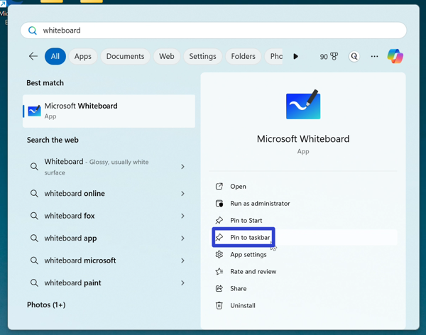
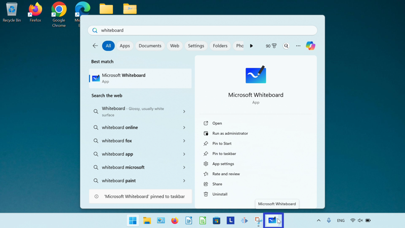
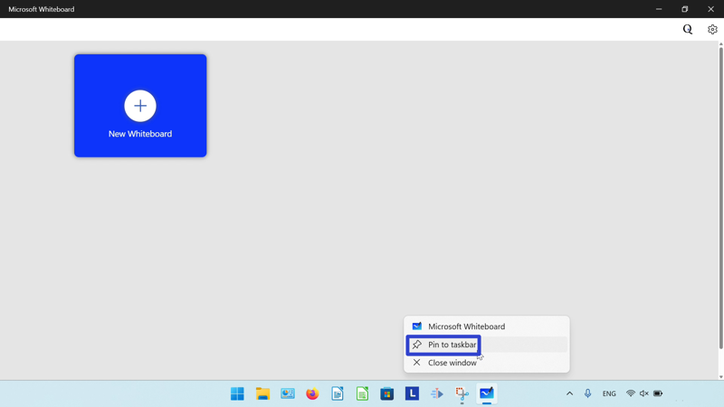
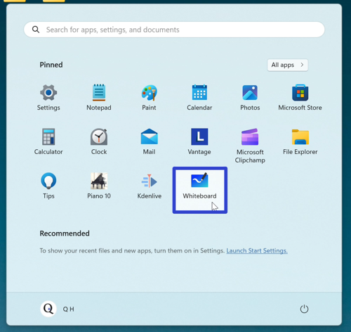
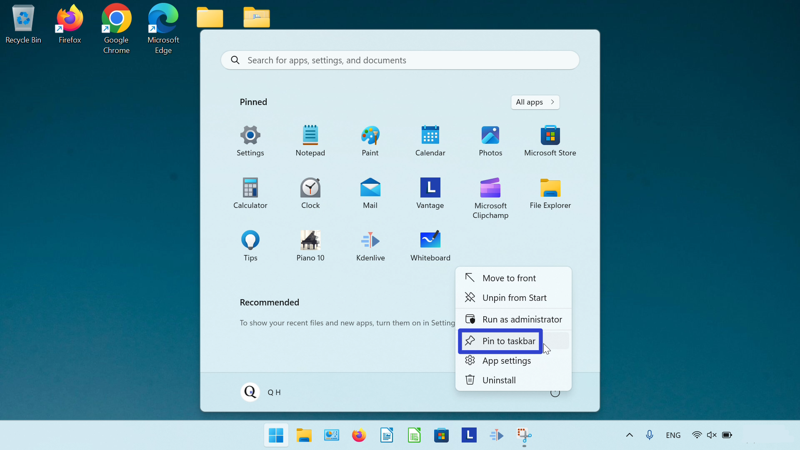
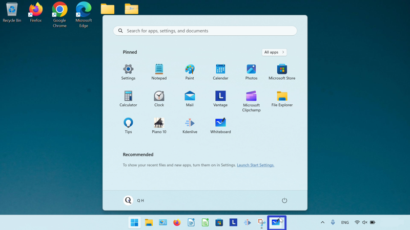
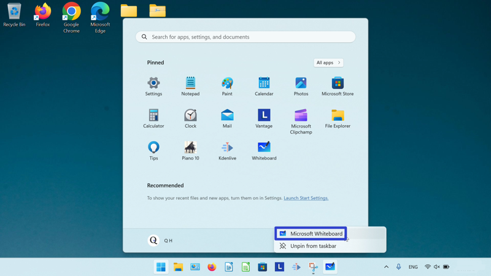
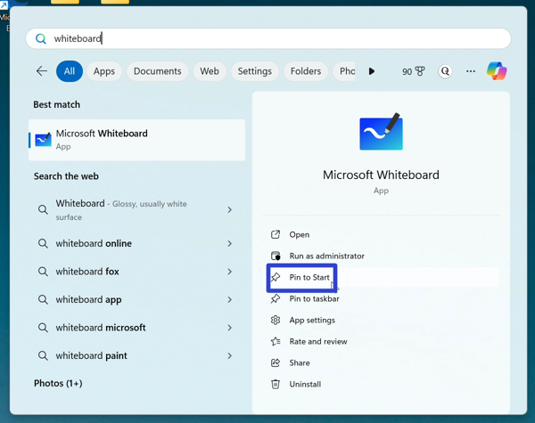
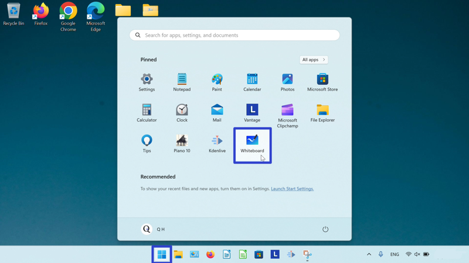

How to Pin the Microsoft Whiteboard App (Windows 11)
This tutorial covers:
How to Pin Microsoft Whiteboard To the Taskbar:
How to Pin Microsoft Whiteboard To Start
No time to scroll down? Click through this presentation tutorial:
Watch a tutorial video:
How to Pin Microsoft Whiteboard to the Taskbar With Search
- Step 1: Go down to the taskbar and click the Start (four blue squares) button.

- Step 2: In the Start window that opens, click the top search bar and type “whiteboard”.

- Step 3: On the search results screen, click “Pin to taskbar”. 
- Step 4: Click the pinned Whiteboard app icon. 
- Microsoft Whiteboard opens.

How to Pin Microsoft Whiteboard to the Taskbar With Right Click
- Step 1: First open Microsoft Whiteboard. Go down to the taskbar and right click the app icon.

- Step 2: In the menu that opens, click “Pin to taskbar”. 
How to Pin Microsoft Whiteboard to the Taskbar From Start
- Step 1: Go down to the taskbar and click the Start (four blue squares) button.
- Step 2: In the Start window that opens, right click the pinned Microsoft Whiteboard app icon. If Microsoft Whiteboard is not already pinned to start, please see How to Pin Microsoft Whiteboard to Start. 
- Step 3: In the menu that opens, click “Pin to taskbar”. 
- Step 4: Go down to the taskbar and right click the pinned Microsoft Whiteboard app icon. 
- Step 5: In the menu that opens, click “Whiteboard”.
- Microsoft Whiteboard opens.
How to Pin Microsoft Whiteboard to Start
- Step 1: Go down to the taskbar and click the Start (four blue squares) button.
- Step 2: In the Start window that opens, click the top search bar and type “whiteboard”.
- Step 3: On the search results screen, click “Pin to Start”. 
- Step 4: Click the Start button twice, and in the Start window that opens, click the pinned Microsoft Whiteboard app icon. 
- Microsoft Whiteboard opens.
Keep a copy of these instructions for later with this free tutorial PDF.